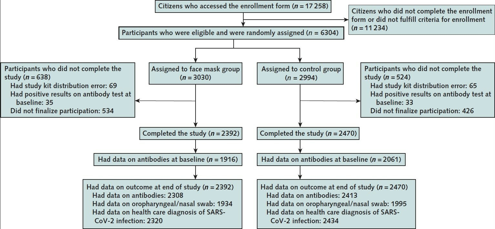
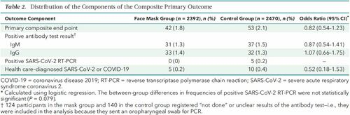

2 Probability
2.1 Intuition for Probability
Fix
The human instinct for probability. By most accounts, this instinct is terrible. And that should strike you as odd. As a rule, evolution does not produce glaring flaws. (It slowly removes them.) So if you see flaws everywhere, it’s a good sign that you’re observing an organism in a foreign environment, a place to which it is not adapted.
When it comes to probability, I argue that humans now live in a foreign environment. But it is of our own creation. Our intuition, I propose, was shaped by observing probability in short samples — the information gleaned from a single human lifetime. But with the tools of mathematics, we now see probability as what happens in the infinite long run. It’s in this foreign mathematical environment that our intuition now lives.
Unsurprisingly, when we compare our intuition to our mathematics, we find a mismatch. But that doesn’t mean our intuition is wrong. Perhaps it is just solving a different problem — one not usually posed by mathematics. Our intuition, I hypothesize, is designed to predict probability in the short run. And on that front, it may be surprisingly accurate.
As a rule, evolutionary biologists don’t look for ‘bias’ in animal behavior. That’s because they assume that organisms have evolved to fit their environment. When flaws do appear, it’s usually because the organism is in a foreign place — an environment where its adaptations have become liabilities.3
As an example, take a deer’s tendency to freeze when struck by headlights. This suicidal flaw is visible because the deer lives in a foreign environment. Deer evolved to have excellent night vision in a world without steel death machines attached to spotlights. In this world, the transition from light to dark happened slowly, so there was no need for fast pupil reflexes. Nor was there a need to flee from bright light. The evolutionary result is that when struck by light, deer freeze until their eyes adjust. It’s a perfectly good behavior … in a world without cars. In the industrial world, it’s a fatal flaw.
Back to humans and our ‘flawed’ intuition for probability. I suspect that many apparent ‘biases’ in our probability intuition stem from a change in our social environment, a change in the way we view ‘chance’.
The gambler’s fallacy
On August 18, 1913, a group of gamblers at the Monte Carlo Casino lost their shirts. It happened at a roulette table, which had racked up a conspicuous streak of blacks. As the streak grew longer, the gamblers became convinced that red was ‘due’. And yet, with each new roll they were wrong. The streak finally ended after 26 blacks in a row. By then, nearly everyone had gone broke.
These poor folks fell victim to what we now call the gambler’s fallacy — the belief that if an event happens more frequently than normal during the past, it is less likely to happen in the future. It is a ‘fallacy’ because in games like roulette, each event is ‘independent’. It doesn’t matter if a roulette ball landed on black 25 times in a row. On the next toss, the probability of landing on black remains the same (18/37 on a European wheel, or 18/38 on an American wheel).
Many gamblers know that roulette outcomes are independent events, meaning the past cannot affect the future. And yet their intuition consistently tells them the opposite. Gamblers at the Monte Carlo Casino had an overwhelming feeling that after 25 blacks, the ball had to land on red.
The mathematics tell us that this intuition is wrong. So why would evolution give us such a faulty sense of probability?
It is in ‘games of chance’ (like roulette) that flaws in our probability intuition are most apparent. Curiously, it is in these same games where the mathematics of probability are best understood. I doubt this is a coincidence.
The Monte Carlo gamblers who lost their shirts misled by their instinct. We recognize our flaws. We know that our instinct misguides us because we’ve developed formal tools for understanding probability. Importantly, these tools were forged in the very place where our intuition is faulty — by studying games of chance.
The crux of the problem. To get an accurate sense for innate probability, you need an absurdly large number of observations. And yet humans typically observe probability in short windows. This mismatch may be why our intuition appears wrong. It’s been shaped to predict probability within small samples.
The trouble is, this ‘long run’ is impossibly long.

If observers see a few hundred tosses of the coin, they will deduce the wrong probability of heads. Even after a few thousand tosses, observers will be misled. In this simulation, it takes about 100,000 tosses before the ‘observed’ probability converges (with reasonable accuracy) to the ‘innate’ probability.
Few people observe 100,000 tosses of a real coin. And that means their experience can mislead. They may conclude that a coin is ‘biased’ when it is actually not. Nassim Nicholas Taleb calls this mistake getting ‘fooled by randomness’.
For outcomes that were frequent, we could develop an accurate intuition. We are excellent, for instance, at using facial expressions to judge emotions — obviously because such judgment is a ubiquitous part of social life. But for outcomes that were rare (things like droughts and floods), patterns would be nearly impossible to see.
As a social species, our most significant interactions are with things that do have a memory (i.e. other humans). So a good rule of thumb may be to project memory onto everything with which we interact.
It could be that our probability intuition is not actually flawed, but is instead a correct interpretation of the evidence … as we see it.
Remember that our intuition has no access to the god’s eye view of ‘innate’ probability. Our intuition evolved based only on what our ancestors observed. What’s important is that humans typically observe probability in short windows. (For instance, we watch a few dozen tosses of a coin.) Interestingly, over these short windows, independent random events do have a memory. Or so it appears.
In his article ‘Aren’t we smart, fellow behavioural scientists’, Jason Collins shows you how to give a coin a ‘memory’. Just toss it 3 times and watch what follows a heads. Repeat this experiment over and over, and you’ll conclude that the coin has a memory. After a heads, the coin is more likely to return a tails.

The data shouts at us that the coin has a ‘memory’. Yet we know this is impossible. What’s happening? The coin’s apparent ‘memory’ is actually an artifact of our observation window of 3 tosses. As we lengthen this window, the coin’s memory disappears.
Here’s the take-home message. If you flip a coin a few times (and do this repeatedly), the evidence will suggest that the coin has a ‘memory’. Increase your observation window, though, and the ‘memory’ will disappear.
When the sample size is small, assuming the coin has a memory is a good way to make predictions.
So what is the evolutionary context of our probability intuition? It is random events viewed through a limited window — the length of a human life. In this context, it’s not clear that our probability intuition is actually biased.
Yes, we tend to project ‘memory’ onto random events that are actually independent. And yet when the sample size is small, projecting memory on these events is actually a good way to make predictions.
Fix (2021) Is Human Probability Intuition Actually ‘Biased’?
2.2 Pandemic Risk Management
Non-Ergodic
Paranoia or Nothing
Taleb and collegues have som very interesting methodological remarks in the early stages of the COVID-19 outbreak:
Clearly, we are dealing with an extreme fat-tailed process owing to an increased connectivity, which increases the spreading in a nonlinear way. Fat tailed processes have special attributes, making conventional risk-management approaches inadequate
The general (non-naive) precautionary principle delin- eates conditions where actions must be taken to reduce risk of ruin, and traditional cost-benefit analyses must not be used. These are ruin problems where, over time, exposure to tail events leads to a certain eventual extinction. While there is a very high probability for humanity surviving a single such event, over time, there is eventually zero probability of surviving repeated exposures to such events. While repeated risks can be taken by individuals with a limited life expectancy, ruin exposures must never be taken at the systemic and collective level. In technical terms, the precautionary principle applies when traditional statistical averages are invalid because risks are not ergodic.
Historically based estimates of spreading rates for pandemics in general, and for the current one in particular, underestimate the rate of spread because of the rapid increases in transportation connectivity over recent years. This means that expectations of the extent of harm are under- estimates both because events are inherently fat tailed, and because the tail is becoming fatter as connectivity increases
Estimates of the virus’s reproductive ratio \(R\_{0}\) —the number of cases one case generates on average over the course of its infectious period in an otherwise uninfected population—are biased downwards. This property comes from fat-tailedness due to individual ‘superspreader’ events. Simply,\(R\_{0}\) is estimated from an average which takes longer to converge as it is itself a fat-tailed variable.
2.3 Quarantine fatigue thins fat-tailed impacts
Abstract Conte:
Fat-tailed damages across disease outbreaks limit the ability to learn and prepare for future outbreaks, as the central limit theorem slows down and fails to hold with infinite moments.
We demonstrate the emergence and persistence of fat tails in contacts across the U.S. We then demonstrate an interaction between these contact rate distributions and community-specific disease dynamics to create fat-tailed distributions of COVID-19 impacts (proxied by weekly cumulative cases and deaths) during the exact time when attempts at suppression were most intense.
Our stochastic SIR model implies the effective reproductive number also follows a fat-tailed stochastic process and leads to multiple waves of cases with unpredictable timing and magnitude instead of a single noisy wave of cases found in many compartmental models that introduce stochasticity via an additively-separable error term.
Public health policies developed based on experiences during these months could be viewed as an overreaction if these impacts were mistakenly perceived as thin tailed, possibly contributing to reduced compliance, regulation, and the quarantine fatigue.
While fat-tailed contact rates associated with superspreaders increase transmission and case numbers, they also suggest a potential benefit: targeted policy interventions are more effective than they would be with thin-tailed contacts.
If policy makers have access to the necessary information and a mandate to act decisively, they might take advantage of fat-tailed contacts to prevent inaction that normalizes case and death counts that would seem extreme early in the outbreak.
Our place-based estimates of contacts aid in these efforts by showing the dynamic nature of movement through communities as the outbreak progresses, which is quite costly to achieve in network models, forcing the assumption of static contact networks in many models.
In extreme value theory, fat tails confound efforts to prepare for future extreme events like natural disasters and violent conflicts because experience does not provide reliable information about future tail draws. However, impacts of extreme events play out over time based on policy and behavioral responses to the event, which are themselves dynamically informed by past experiences.
A general pattern of fat-tailed contact rate distributions across the U.S. suggests that fat tails in U.S. cases observed early in the outbreak are due to city- and county-specific contact networks and epidemiological dynamics.
By unpacking the dynamics that lead to the impacts of extreme events, we show that 1) fat-tailed impacts can also confound efforts to control and manage impacts in the midst of extreme events and 2) thin tails in disease impacts are not necessarily desirable, if they indicate an inevitable catastrophe.
Conte (2021) Quarantine fatigue thins fat-tailed coronavirus impacts (pdf) (pdf - SM)
2.4 Herd Immunity impossible with new Mutants
Professor of vaccinology Shabir Madhi at the University of the Witwatersrand says protecting at-risk individuals against severe Covid is more important than herd immunity
Leading vaccine scientists are calling for a rethink of the goals of vaccination programmes, saying that herd immunity through vaccination is unlikely to be possible because of the emergence of variants like that in South Africa.
The comments came as the University of Oxford and AstraZeneca acknowledged that their vaccine will not protect people against mild to moderate Covid illness caused by the South African variant.
Novavax and Janssen, which were trialled there in recent months and were found to have much reduced protection against the variant – at about 60%. Pfizer/BioNTech and Moderna have also said the variant affects the efficacy of their vaccines, although on the basis of lab studies only.
These findings recalibrate thinking about how to approach the pandemic virus and shift the focus from the goal of herd immunity against transmission to the protection of all at-risk individuals in the population against severe disease.
We probably need to switch to protecting the vulnerable, with the best vaccines we have which, although they don’t stop infection, they probably do stop you dying.
2.5 Danish Mask Study
Every study needs its own statistical tools, adapted to the specific problem, which is why it is a good practice to require that statisticians come from mathematical probability rather than some software-cookbook school. When one uses canned software statistics adapted to regular medicine (say, cardiology), one is bound to make severe mistakes when it comes to epidemiological problems in the tails or ones where there is a measurement error. The authors of the study discussed below (The Danish Mask Study) both missed the effect of false positive noise on sample size and a central statistical signal from a divergence in PCR results. A correct computation of the odds ratio shows a massive risk reduction coming from masks.
The article by Bundgaard et al., [“Effectiveness of Adding a Mask Recommendation to Other Public Health Measures to Prevent SARS-CoV-2 Infection in Danish Mask Wearers”, Annals of Internal Medicine (henceforth the “Danish Mask Study”)] relies on the standard methods of randomized control trials to establish the difference between the rate of infections of people wearing masks outside the house v.s. those who don’t (the control group), everything else maintained constant. The authors claimed that they calibrated their sample size to compute a p-value (alas) off a base rate of 2% infection in the general population. The result is a small difference in the rate of infection in favor of masks (2.1% vs 1.8%, or 42/2392 vs. 53/2470), deemed by the authors as not sufficient to warrant a conclusion about the effectiveness of masks.

…

Taleb’s Points:
The Mask Group has 0/2392 PCR infections vs 5/2470 for the Control Group. Note that this is the only robust result and the authors did not test to see how nonrandom that can be. They missed on the strongest statistical signal. (One may also see 5 infections vs. 15 if, in addition, one accounts for clinically detected infections.)
The rest, 42/2392 vs. 53/2470, are from antibody tests with a high error rate which need to be incorporated via propagation of uncertainty-style methods on the statistical significance of the results. Intuitively a false positive rate with an expected “true value” \(p\) is a random variable \(\rightarrow\) Binomial Distribution with STD \(\sqrt{n p (1-p)}\)
False positives must be deducted in the computation of the odds ratio.
The central problem is that both p and the incidence of infection are in the tails!
As most infections happen at home, the study does not inform on masks in general –it uses wrong denominators for the computation of odds ratios (mixes conditional and unconditional risk). Worse, the study is not even applicable to derive information on masks vs. no masks outside the house since during most of the study (April 3 to May 20, 2020), “cafés and restaurants were closed “, conditions too specific and during which the infection rates are severely reduced –tells us nothing about changes in indoor activity. (The study ended June 2, 2020). A study is supposed to isolate a source of risk; such source must be general to periods outside the study (unlike cardiology with unconditional effects).
The study does not take into account the fact that masks might protect others. Clearly this is not cardiology but an interactive system.
Statistical signals compound. One needs to input the entire shebang, not simple individual tests to assess the joint probability of an effect.
Comment from Tom Wenseleers For the 5 vs 0 PCR positive result the p value you calculate is flawed. The correct way to do it would e.g. be using a Firth logistic regression. Using R that would give you:
library(brglm)
summary(brglm(cbind(pcrpos, pcrneg) ~ treatment, family=binomial, data=data.frame(treatment=factor(c(“masks”,”nomasks”)),
pcrpos=c(0,5), pcrneg=c(2392,2470-5))))
2-sided p=0.11.
So that’s not significantly different.
Alternatively, you might use a Fisher’s exact test, which would give you :
fisher.test(cbind(c(0,2392),c(5,2470-5))):
2-sided p = 0.06.
Again, not significantly different.A Firth logistic regression would be more appropriate though, since we have a clear outcome variable here and we don’t just want to test for an association in a 2×2 contingency table, as one would do using a Fisher’s exact test. For details see Firth, D. (1993). Bias reduction of maximum likelihood estimates. Biometrika 80, 27–38. A regular logistic regression doesn’t work here btw because of complete separation, https://en.wikipedia.org/wiki/Separation_(statistics) https://stats.stackexchange.com/questions/11109/how-to-deal-with-perfect-separation-in-logistic-regression. Going Bayesian would also be a solution, e.g. using the bayesglm() or brms package, or one could use an L1 or L2 norm or elastic net penalized binomial GLM model, e.g. using glmnet.
But the p value you calculate above is definitely not correct. Sometimes it helps to not try to reinvent the wheel.
The derivation of Fisher’s exact test you can find in most Statistics 101 courses, see e.g. https://mathworld.wolfram.com/FishersExactTest.html. For Firth’s penalized logistic regression, see https://medium.com/datadriveninvestor/firths-logistic-regression-classification-with-datasets-that-are-small-imbalanced-or-separated-49d7782a13f1 for a derivation. Or in Firth’s original article: https://www.jstor.org/stable/2336755?seq=1#metadata_info_tab_contents.
Technically, the problem with the way you calculated your p value above is that you use a one-sample binomial test, and assume there is no sampling uncertainty on the p=5/2470. Which is obviously not correct. So you need a two-sample binomial test instead, which you could get via a logistic regression. But since you have complete separation you then can’t use a standard binomial GLM, and have to use e.g. a Firth penalized logistic regression instead. Anyway, the details are in the links above.
You write “The probability of having 0 realizations in 2392 if the mean is \(\frac{5}{2470}\) is 0.0078518, that is 1 in 127. We can reexpress it in p values, which would be <.01”. This statement is obviously not correct then.
And if you didn’t do p values – well, then your piece above is a little weak as a reply on how the authors should have done their hypothesis testing in a proper way, don’t you think? If the 0 vs 5 PCR positive result is not statistically significant I don’t see how you can make a sweeping statement like “The Mask Group has 0/2392 PCR infections vs 5/2470 for the Control Group. Note that this is the only robust result and the authors did not test to see how nonrandom that can be. They missed on the strongest statistical signal.”. That “strong statistical signal” you mention turns out not be statistically significant at the p<0.05 level if you do your stats properly…
Taleb:You are conflating p values and statistical significance. Besides, I don’t do P values. https://arxiv.org/pdf/1603.07532.pdf
you can also work with Bayes Factors if you like. Anything more formal than what you have above should do really… But just working with a PMF of a binomial distribution, and ignoring the sampling error on the 5/2470 control group is not OK. And if you’re worried about the accuracy of p values you could always still calculate 95% confidence limits on them, right? Also not really what people would typically consider p-hacking…
Your title may a bit of a misnomer then. And as I mentioned: if one is worried about the accuracy of your p values & stochasticity on its estimated value, you can always calculate p-value prediction intervals, https://royalsocietypublishing.org/doi/10.1098/rsbl.2019.0174.
You are still ignoring the sampling uncertainty on the 0/2392. If you would like to go Monte Carlo you can use an exact-like logistic regression (https://www.jstatsoft.org/article/view/v021i03/v21i03.pdf). Using R, that gives me
For the 0 vs 5 PCR positive result:
library(elrm)
set.seed(1)
fit = elrm(pcrpos/n ~ treatment, ~ treatment,
r=2, iter=400000, burnIn=1000,
dataset=data.frame(treatment=factor(c(“masks”, “control”)), pcrpos=c(0, 5), n=c(2392, 2470)) )
fit$p.values # p value = 0.06, ie just about not significant at the 0.05 level
fit$p.values.se # standard error on p value = 0.0003 # this is very close to the 2-sided Fisher exact test p value
fisher.test(cbind(c(0,2392), c(5,2470-5))) # p value = 0.06
For the 0 vs 15 result:
set.seed(1)
fit = elrm(pcrpos/n ~ treatment, ~ treatment,
r=2, iter=400000, burnIn=1000,
dataset=data.frame(treatment=factor(c(“masks”, “control”)), pos=c(5, 15), n=c(2392, 2470)) )
fit$p.values # p value = 0.04 – this would be just about significant at the 0.05 level
fit$p.values.se # standard error on p value = 0.0003So some evidence for the opposite conclusions as what they have (especially for the 5 vs 15 result), but still not terribly strong.
Details of method are in https://www.jstatsoft.org/article/view/v021i03/v21i03.pdf.
I can see you don’t like canned statistics. And you could recode these kinds of methods quite easily in Mathematica if you like, see here for a Fisher’s exact test e.g.: https://mathematica.stackexchange.com/questions/41450/better-way-to-get-fisher-exact.
But believe me – also Sir Ronald Fisher will have thought long and hard about these kinds of problems. And he would have seen in seconds that what you do above is simply not correct. Quite big consensus on that if I read the various comments here by different people…
I was testing the hypothesis of there being no difference in infection rate between both groups and so was doing 2-sided tests. Some have argued that masks could actually make things worse if not used properly. So not doing a directional test would seem most objective to me. But if you insist, then yes, you could use 1-tailed p values… Then you would get 1-sided p values of 0.03 and 0.02 for the 0 vs 5 and 5 vs 15 sections of the data. Still deviates quite a bit from the p<0.01 that you first had.
In terms of double column joint distribution: then I think your code above should have e.g. 15/2470 and 5/2392 as your expectation of the Bernoulli distribution for vs 5 vs 15 comparison. But that would give problems for the 0/2392 outcome for the masks group in the 0 vs 5 comparison. As simulated Bernouilli trials with p=0 will be all zeros. Also, right now I don’t see where that 2400 was coming from in your code. I get that you are doing a one-sided two-sample binomial test here via a MC approach. That’s not the same than a Fisher exact test though.
Andreas: Weird, the last part of my comment above apparently got chopped up somehow. Ignore the CI calculations as they got messed up, but are trivial. Trying again with the text that got lost, containing my main point:
So the false positive-adjusted Odds Ratio is .71 [95% CI .41, 1.21], using the same model as the authors of the paper did. This can be compared to their reported OR = .82 [95% CI .54, 1.23].
Even with my quite conservative adjustment, the only robust finding claimed in the paper is not robust anymore – the estimated risk reduction is no longer significantly lower than 50%, according to the same standard logistic model used by the authors. Nor is it sig. larger than 0%. The CI did not really improve over the unadjusted one (maybe this was obvious a priori, but not to me). Either way I think .71 is a better estimate than the .82 that was reported in the paper, based on Nassim’s reasoning about the expected false positives. And .71 vs. .82 might well have crossed the line for a mask policy to be seriously considered, by some policymaker who rejected .82 as too close to 1.
Sensitivity analysis of the FPR adjustment: 1% FPR (Nassim’s suggestion from the blog post) => OR = .66 [95% CI .36, 1.19] .5% FPR (lower estimate from the Bundgaard et al. paper, based on a previous study) => OR = .76 [95% CI .47, 1.22]
Tom
I do agree with all the shortcomings of this study in general though. It certainly was massively underpowered.
Other comments:
Bundgaard (2020) Effectiveness of Adding Mask Same in Annals
Composite Endpoints:
Composite endpoints in clinical trials are composed of primary endpoints that contain two or more distinct component endpoints. The purported benefits include increased statistical efficiency, decrease in sample-size requirements, shorter trial duration, and decreased cost. However, the purported benefits must be diligently weighed against the inherent challenges in interpretation. Furthermore, the larger the gradient in importance, frequency, or results between the component endpoints, the less informative the composite endpoint becomes, thereby decreasing its utility for medical-decision making.
[Composite Endpoints (NIH)] (https://www.ncbi.nlm.nih.gov/pmc/articles/PMC6040910/)